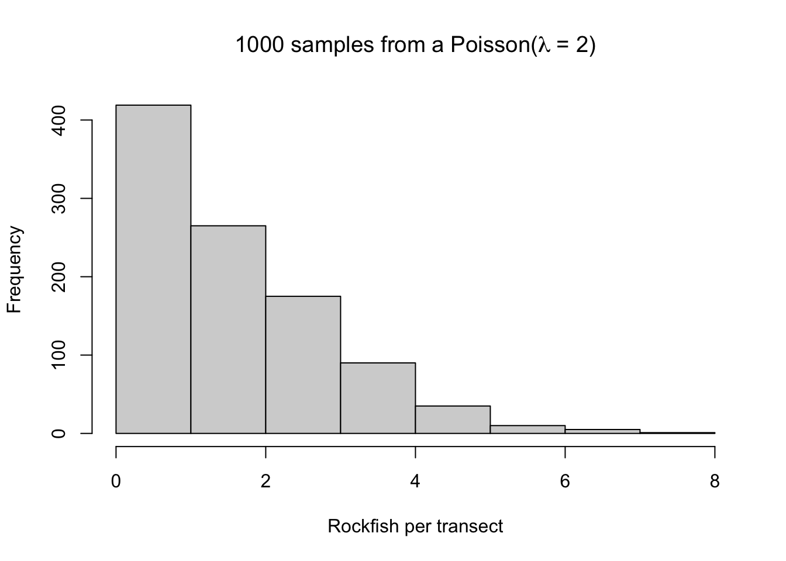
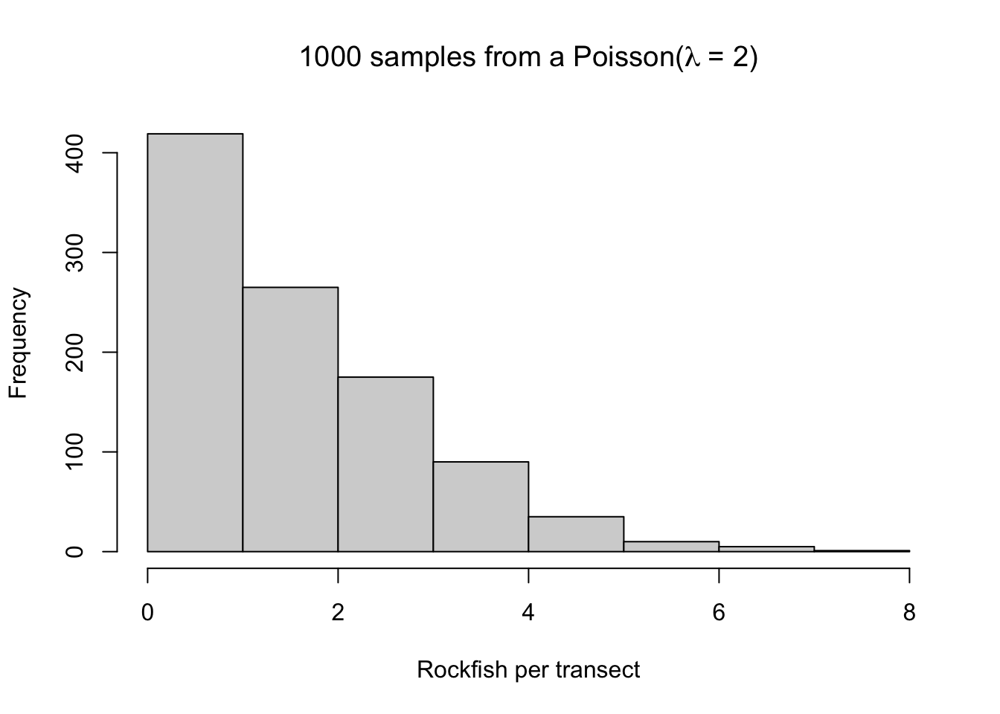
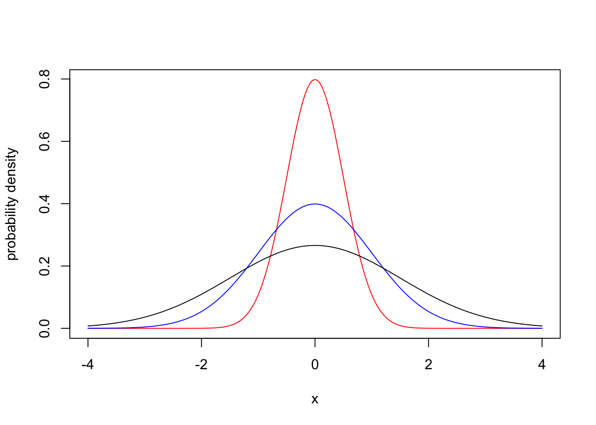
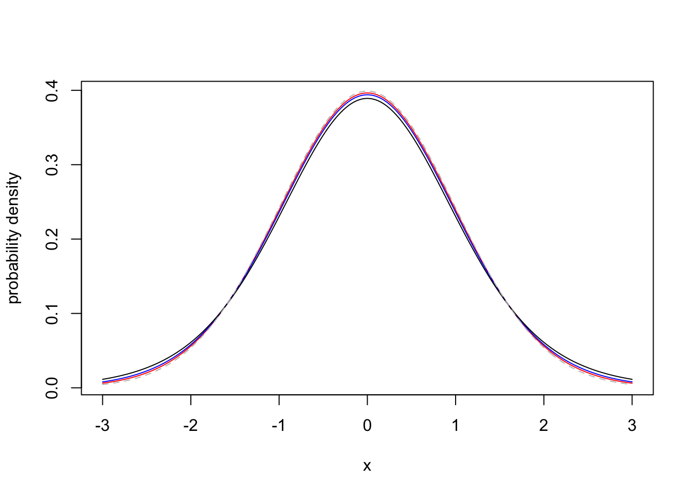

set.seed(101)
x <- rpois(n = 1000, lambda = 2)
hist(x, xlab = "Rockfish per transect",
main = expression(paste("1000 samples from a Poisson(", lambda, " = 2)")))
Robin Elahi
Questions for review and discussion, based on chapter 2 from Quinn and Keough 2023.
What is a sample?
What is the difference between a statistic and a parameter?
What is the difference between process and observation uncertainty?
Define the following terms:
probability
sample space
conditional probability
Draw a Venn diagram representing the probability of three outcomes (A, B) in a sample space. Let C be mutually exclusive of A and B, but allow A and B to overlap. Use this diagram to visualize the idea of conditional probability, and relate it to the the mathematical equation for conditional probability.
Define the following terms:
random variable
discrete variable
continuous variable
probability distribution
probability mass function
probability density function
Imagine you have counted rockfish along transects in the kelp forest. You are an avid diver, so you completed 1000 transects. Because these are count data, we will use a Poisson distribution (the support for the Poisson is non-negative integers). The average number of fish is 2 per transect. Note that in the Poisson, one parameter (\(\lambda\)), governs the central tendency and the spread of the distribution (unlike, e.g., the Normal). This means the single parameter of the Poisson distribution is \(\lambda = 2\).
Here, we generate data according to our data story:
set.seed(101)
x <- rpois(n = 1000, lambda = 2)
hist(x, xlab = "Rockfish per transect",
main = expression(paste("1000 samples from a Poisson(", lambda, " = 2)")))
Now run these two lines of code. Why do these two expressions give you the same answer? (To force you to dig into the help files for these functions, I am not writing explicit code).
The above code tells us that ~67% of the probability mass of a Poisson(2) distribution lies at or below 2. Returning to our random samples, let’s use quantile to figure out which of our values is at the 67th percentile in our data:
Now let’s use qpois to identify the value at which we have 67% of the observations:
Finally, let’s just tabulate the data to see if this all makes sense:
Ponder all of this until your understanding of the inter-relationships between d, p, q, r - pois is solid.
Let’s plot a Normal distribution centered at 0, with different standard deviations:
x_grid <- seq(-4, 4, 0.01)
plot(x_grid, dnorm(x_grid, mean = 0, sd = 0.5), type = "l",
col = "red", xlab = "x", ylab = "probability density")
lines(x_grid, dnorm(x_grid, mean = 0, sd = 1), type = "l",
col = "blue")
lines(x_grid, dnorm(x_grid, mean = 0, sd = 1.5), type = "l",
col = "black")
Let’s compare with a Student t-distribution:
x_grid <- seq(-3, 3, 0.01)
plot(x_grid, dt(x_grid, df = 40), type = "l",
col = "red", xlab = "x", ylab = "probability density")
lines(x_grid, dt(x_grid, df = 20), type = "l",
col = "blue")
lines(x_grid, dt(x_grid, df = 10), type = "l",
col = "black")
lines(x_grid, dnorm(x_grid, mean = 0, sd = 1), type = "l",
col = "gray", lty = 2)
The difference appears to be small. But the ‘thicker tails’ of the t-distribution dramatically increases the probability of extreme events, so-called black swans (e.g., in animal populations).
Find the mean, variance, and 95% quantiles (i.e., 2.5% and 97.5% quantiles) of 1000 random draws from a Poisson distribution with \(\lambda=33\).
What is the probability \(\text P (X \leq 6)\) that a random draw from a Poisson distribution with \(\lambda = 4\) will be less than or equal to 6?
What is the probability \(\text P(X = 3)\) of obtaining a value of 3 from a Binomial distribution with \(p = 0.3\) and \(n = 5\)?
What is the probability \(\text P(-1.5 \leq X \leq 1.5)\) that a value drawn from a standard normal distribution will be between -1.5 and 1.5? It may help to approach this visually.
Find the value \(x\) that satisfies to \(\text P(X \leq x) = 0.8\), if \(X\) is a Gamma random variable with \(k=2\) and \(\theta = 1\).
What is estimation?
What makes a good estimator?
Compare and contrast these frequentist estimation methods:
ordinary least squares
maximum likelihood
resampling (bootstrap)
Hypothesis testing
Comments on frequentist inference
Bayesian inference